1. Som nybegynder vil jeg følge en rutineret bruger, så jeg kan få inspiration og forstå, hvordan øvelser udføres korrekt.
Succesmetrik: Brugeren følger mindst én rutineret bruger inden for første uge, og åbner mindst én story eller profil fra dem.
Opgaven her var at designe og udvikle webappen FitTogether et digitalt træningsfællesskab, der motiverer brugere gennem sociale relationer og fælles mål. Processen omfattede brief, personas, OOUX, user stories, acceptance criterias, user flows og wireflows for at definere struktur og funktion.
Designet blev udviklet gennem skitser, wireframes, mock-ups og en design- og brandguide, som tilsammen skal skabe en sammenhængende og motiverende brugeroplevelse.
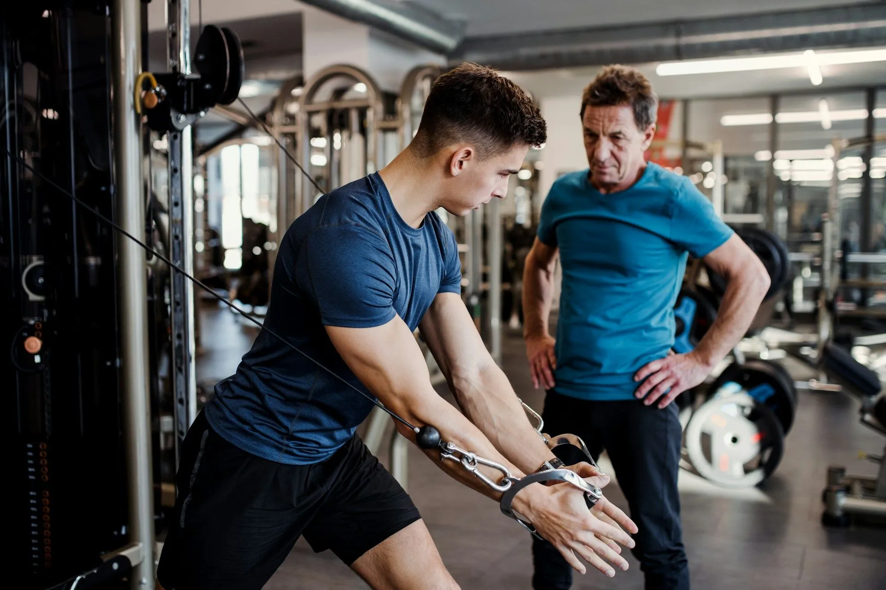
FitTogether er en digital fitnessplatform, der har til formål at skabe motivation og fællesskab omkring træning uanset niveau. Målet er at gøre træning mere menneskelig, støttende og social ved at fokusere på udvikling i eget tempo fremfor konkurrence. FitTogether's værdier er fællesskab, støtte og personlig udvikling grundprincipper, der skal være med til at danne et fundament for hele designprocessen.
Klient og Kontekst
Maria Jensen (37) er ejer og grundlægger af FitTogether, en ny digital fitnessplatform til mobil, som er under udvikling. Med en baggrund som projektleder i et healthtech-startup og en livslang passion for bevægelse og fællesskab, har Maria dedikeret sin karriere til at gøre træning mere menneskelig og motiverende.
Ideen til FitTogether opstod ud fra hendes egen oplevelse af, at fitness ofte kan føles ensomt især for nybegyndere, der mangler støtte, og for rutinerede brugere, der savner fællesskab uden konkurrence.
Målet med FitTogether er at bygge et digitalt community, hvor brugere kan støtte hinanden i deres træning, dele erfaringer, give tips og råd, og finde motivation gennem ægte interaktion ikke “likes”, men reelle forbindelser.
Krav
Den empiriske del af projektet bygger på tre personas: Sofie (nybegynder), Mikkel (rutineret) og Camilla (dedikeret). Personas repræsenterer forskellige niveauer af træningsrutine, motivation og sociale behov.
Sofie har aldrig været den sporty type. I gymnasiet hadede hun idræt, og på universitetet blev hendes liv ret stillesiddende.
Efter hun startede på fuldtidsarbejde og begyndte at arbejde hjemmefra et par dage om ugen, mærkede hun, hvor meget kroppen faktisk savnede bevægelse. Hun begyndte at føle sig træt og ukoncentreret i løbet af dagen, og hendes søvn blev dårligere.
Da en veninde foreslog at starte til holdtræning, prøvede Sofie et par gange men hun følte sig utilpas og langsom sammenlignet med de andre.
Hun besluttede derfor at finde en måde at komme i gang på sine egne præmisser. Hun fandt et par YouTube-videoer og købte en yogamåtte. Det føltes godt, men ensomt og hun savner følelsen af støtte og fællesskab uden at skulle “deltage” aktivt.
Sofie vil ikke have “summer body” eller sixpack. Hun vil føle sig frisk, stærk og stolt af sig selv. Hun bliver motiveret af små sejre , som at kunne tage 10 minutter ekstra på gåturen eller mærke, at hun får bedre holdning. Hun drømmer om at gøre træning til en naturlig og tryg del af hverdagen, ikke et pres.
Sofie’s mål på den kort sigtede plan er, at træne 2–3 gange om ugen, føle sig mere aktiv og energisk. På langt sigt vil hun gøre træning til en vane, hun faktisk glæder sig til. I forhold til hendes fremtid med fitness vil hun se det som en del af hendes livsstil, måske endda begynde at inspirere andre nybegyndere gennem sit eget eksempel.
“Jeg prøver ikke at blive den bedste, jeg vil bare føle mig godt tilpas i min egen krop.”
Nysgerrig, reflekteret, omsorgsfuld, målbevidst, selvudviklende.
En nybegynder i fitness er en person, der er i de
første stadier af at integrere fysisk træning som en
del af sin livsstil. Personen har begrænset erfaring
med træningsrutiner, teknikker og udstyr, og søger
ofte vejledning, struktur og motivation for at komme
godt i gang.
Mikkel begyndte at træne i starten af 20’erne, efter en skulderskade fra fodbold tvang ham til at stoppe med holdsport.
Han fandt hurtigt ud af, at styrketræning gav ham både struktur og ro, og at han kunne bruge sin fysioterapeutiske viden til at forstå kroppen bedre.
Han træner 4–5 gange om ugen, både i fitnesscenteret og udendørs. Han er ikke besat af tal eller PR’er, men elsker følelsen af kontrol og balance: at vide, han gør noget godt for sig selv.
Mikkel bruger fitness som et mentalt frirum fra hverdagen. Han er ikke optaget af at vise sin træning frem, men kan godt lide at dele tips og erfaringer med ligesindede.
For Mikkel handler træning om vedligeholdelse, velvære og udvikling. Han motiveres af følelsen af rutine — at kroppen føles stærk, og sindet klart.
Han ser fitness som en form for selvdisciplin og mental træning: et sted, hvor han mærker sig selv og sin fremgang.
Mikkel’s mål på den kort sigtede plan er, bevare sin rutine og holde sig skadefri. På langt sigt vil han fortsætte med at bruge træning som et mentalt frirum. I forhold til hans fremtid med fitness vil han inspirere andre til at finde glæden i konsistent, realistisk træning.
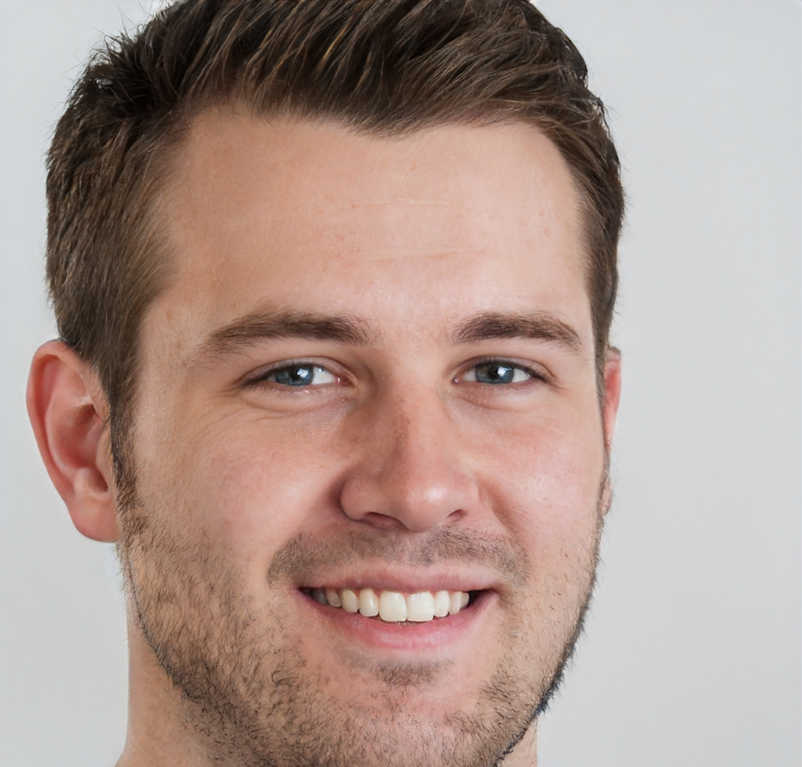
“Jeg elsker at presse mig selv, men holder også af restitution.”
Ambitiøs, målrettet, social, konkurrenceminded.
En rutineret fitness-go’er er en person, der har
integreret træning som en fast del af sin livsstil. De
har opbygget en solid forståelse for træningsteknik,
restitution og kost, og træner regelmæssigt med et
balanceret fokus på sundhed, styrke og velvære, ikke
nødvendigvis konkurrence.
Camilla begyndte at træne i fitnesscenteret som 18-årig, oprindeligt for at komme i form efter gymnasiet.
Hun blev hurtigt fascineret af, hvordan kroppen kunne formes og forbedres gennem målrettet træning og kost.
Efter et par år begyndte hun at deltage i fitnesskonkurrencer og crossfit-events, og hun blev opslugt af tanken om at optimere både sin fysiske og mentale styrke.
I dag arbejder hun som personlig træner, men ser stadig sin egen træning som noget helt personligt et frirum, hvor hun udfordrer sig selv og afprøver nye grænser.
Camilla drives af selvforbedring, struktur og resultater. Hun elsker følelsen af progression at kunne løfte tungere, løbe hurtigere eller restituere bedre.
Hun finder ro i planlægning og kontrol, og bliver motiveret af data, mål og konkurrence.Træning er for hende en livsstil, ikke en hobby.
Camilla’s mål på den kort sigtede plan er, at kvalificere sig til sin næste crossfit-konkurrence. På langt sigt vil hun udvide sin coachingforretning og inspirere andre til at tage træning seriøst. I forhold til hans fremtid med fitness vil hun leve af sin passion og bygge et fællesskab omkring dedikation og disciplin.
“Disciplin slår motivation – hver eneste dag.”
Dedikeret, ambitiøs, inspirerende.
En dedikeret fitness-go’er har gjort træning til en
central del af sin identitet og hverdag. De sætter mål,
måler fremskridt og søger konstant forbedring både
fysisk og mentalt. Motivationen ligger i performance,
mestring og selvdisciplin, og træning bliver ofte
planlagt som en seriøs rutine på linje med arbejde eller
studie.
Brugerdata fra FitTogether er organiseret i en OOUX-struktur, hvor nøgleobjekter som programmer, øvelser, brugerprofiler og fællesskabsindlæg kortlægges sammen med deres relationer. Denne tilgang giver et klart overblik over, hvordan appens informationsarkitektur understøtter brugernes behov og motivation. Samtidig gør det muligt at formidle designbeslutninger professionelt til interessenter og vise, hvordan struktur og indhold hænger sammen med brugernes fitnessrejse.
Disse billeder illustrerer, hvordan mine 5 objekter: Rutineret fitness go’er, Tips og råd, Fitness stories, Personlig udvikling og træningsplan, relaterer sig til hinanden i ORCA-modellen. Samspillet mellem objekterne viser, hvordan de understøtter hinanden og skaber værdi for målgruppen.
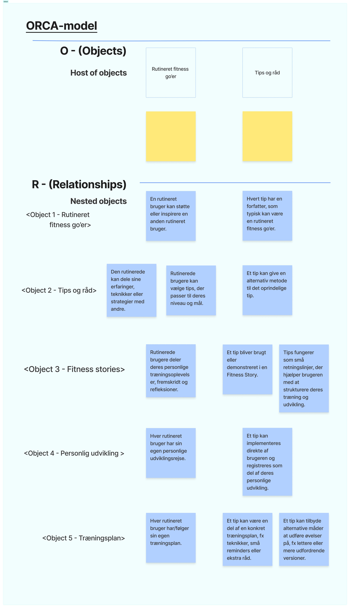
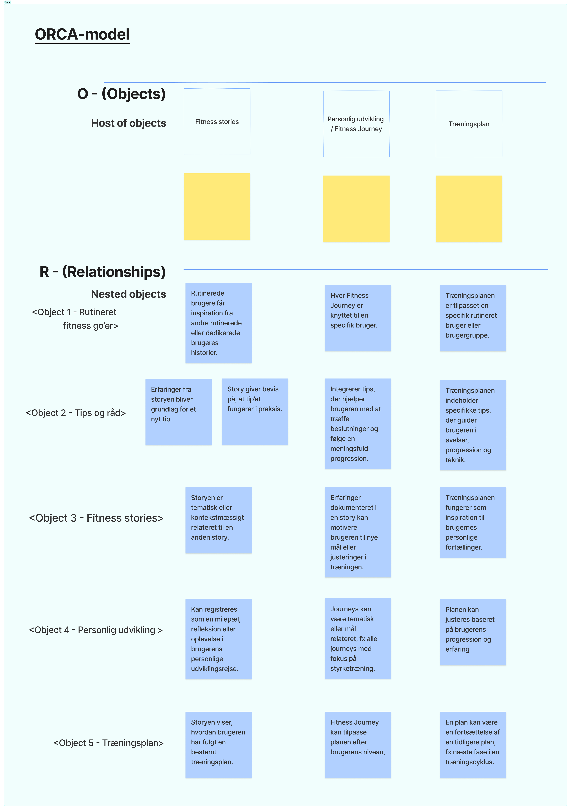
Her fokuseres på mine calls to action i forhold til de 5 objekter. Billederne viser, hvordan handlinger og engagement kan aktiveres, og hvordan hver CTA er tilpasset objektets karakter og mål.
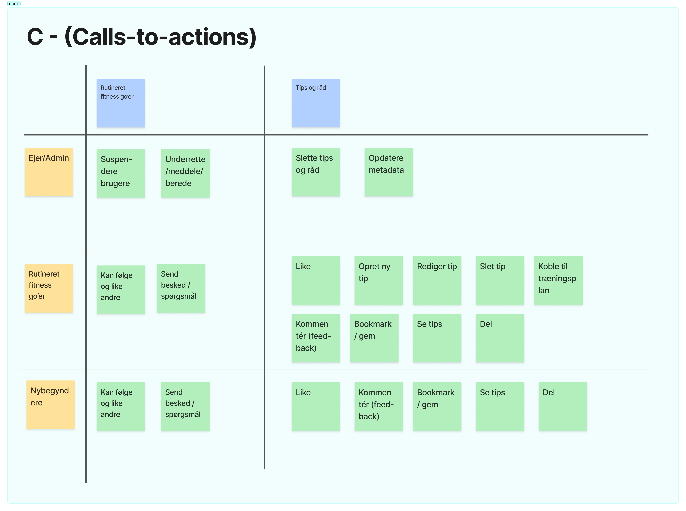
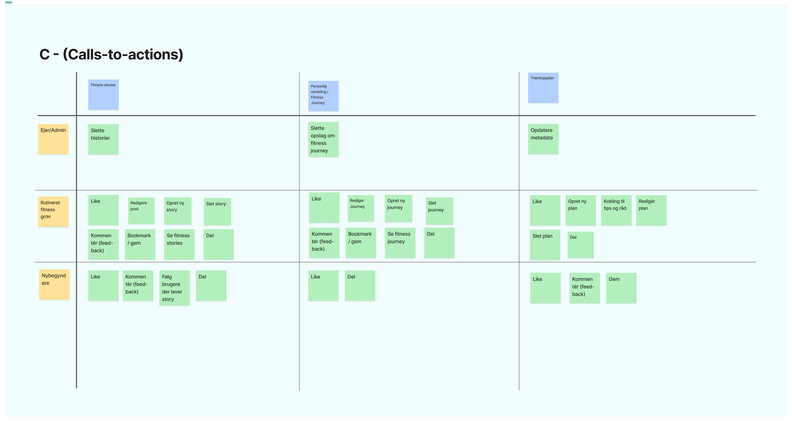
Det sidste billede fremhæver Attributes-delen, hvor de centrale egenskaber og kvaliteter ved hvert objekt præsenteres. Dette giver et overblik over, hvordan hvert objekt skiller sig ud, og hvilke styrker der kan fremhæves i kommunikation og indhold.
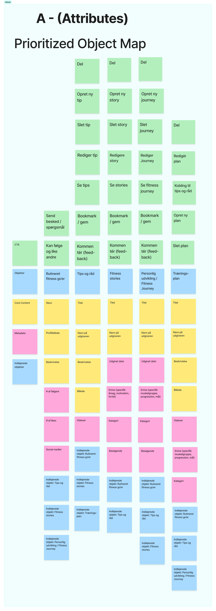
På baggrund af FitTogether’s målgruppe er brugerindsigterne omsat til konkrete user stories, der beskriver funktioner og handlinger, appen skal kunne levere for at opfylde de tre personas’ behov nybegyndere, rutinerede og dedikerede brugere.
1. Som nybegynder vil jeg følge en rutineret bruger, så jeg kan få inspiration og forstå, hvordan øvelser udføres korrekt.
Succesmetrik: Brugeren følger mindst én rutineret bruger inden for første uge, og åbner mindst én story eller profil fra dem.
2. Som nybegynder vil jeg se tip & råd, så jeg kan lære grundlæggende teknikker og undgå skader.
Succesmetrik: Brugeren læser mindst 3 tips inden for de første 7 dage og markerer mindst ét tip som "klar til brug".
3. Som nybegynder vil jeg starte min personlige fitness journey, så jeg kan logge mine fremskridt og følge min udvikling over tid.
Succesmetrik: Brugeren opretter sin første milepæl eller session inden for de første 3 dage efter tilmelding.
4. Som nybegynder vil jeg prøve en træningsplan, så jeg kan følge en struktureret træning uden at skulle planlægge selv.
Succesmetrik: Brugeren starter mindst én træningsplan og logger fuldførelsen af minimum én træningssession inden for første uge.
5. Som rutineret bruger vil jeg dele en fitness story, så jeg kan dokumentere min progression og inspirere andre.
Succesmetrik: Brugeren opretter mindst én story pr. måned, som mindst én anden bruger interagerer med (like eller kommentar).
6. Som rutineret bruger vil jeg anvende avancerede tips & råd, så jeg kan optimere min træning og teknik.
Succesmetrik: Brugeren markerer mindst 3 tips som "anvendt" og logger fremskridt, der korresponderer med tipsene.
7. Som rutineret bruger vil jeg tilpasse min personlige udvikling / journey, så mine mål og milepæle passer til mit niveau.
Succesmetrik: Brugeren opdaterer mindst én milepæl eller mål i sin journey hver uge og kan se progression i loggen.
8. Som rutineret bruger vil jeg følge eller ændre en træningsplan, så den passer til min progression og træningsmål.
Succesmetrik: Brugeren tilpasser mindst én træningsplan og gennemfører mindst én session, der reflekterer ændringerne.
9. Som dedikeret bruger vil jeg dele og kommentere fitness stories, så jeg kan konkurrere, dele erfaringer og motivere andre.
Succesmetrik: Brugeren deler mindst én story pr. uge og kommenterer mindst én story fra andre brugere.
10. Som dedikeret bruger vil jeg oprette egne avancerede tips & råd, så jeg kan hjælpe andre og positionere mig som ekspert i fællesskabet.
Succesmetrik: Brugeren opretter mindst 2 tips pr. måned, som mindst én anden bruger anvender eller gemmer.
11. Som dedikeret bruger vil jeg logge og analysere min personlige udvikling / journey, så jeg kan optimere træning og følge konkurrencepræstationer.
Succesmetrik: Brugeren logger mindst 3 træningssessioner om ugen og kan generere mindst én rapport over fremskridt hver måned.
12. Som dedikeret bruger vil jeg oprette og eksperimentere med træningsplaner, så jeg kan finde den mest effektive metode til at nå mine mål hurtigere end andre.
Succesmetrik: Brugeren opretter mindst én ny plan om måneden og gennemfører mindst 80% af planens sessioner i den planlagte periode.
Jeg organiserer så user stories for at få et klart overblik over de vigtigste funktioner og behov for nybegyndere, rutinerede og dedikerede brugere. De forskellige stories er prioriteret efter betydning, så de mest kritiske behov kommer først, og det er disse, jeg viderebearbejder med acceptance criteria for at sikre, at appen leverer reel værdi og understøtter fællesskab og motivation i brugerrejsen.
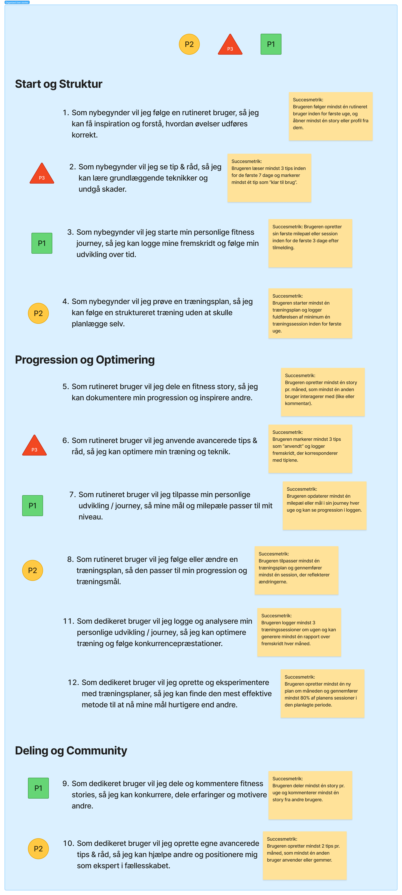
For de valgte user stories er de tilknyttet tydelige acceptance criterias, der beskriver, hvornår kravene anses for opfyldt. For FitTogether betyder det, at funktioner som logning af træning, progressionsoverblik, deling af programmer og forslag til næste skridt testes mod brugernes behov.
3. Som nybegynder vil jeg starte min personlige fitness journey, så jeg kan logge mine fremskridt og følge min udvikling over tid.
7. Som rutineret bruger vil jeg tilpasse min personlige udvikling / journey, så mine mål og milepæle passer til mit niveau.
9. Som dedikeret bruger vil jeg dele og kommentere fitness stories, så jeg kan konkurrere, dele erfaringer og motivere andre.
Jeg tog udgangspunkt i user story nr. 9, hvor en dedikeret bruger ønsker at dele og kommentere fitness stories for at motivere andre. Ved at kortlægge denne proces kunne jeg tydeliggøre, hvordan brugeren bevæger sig gennem appen, og hvordan funktionerne understøtter fællesskab og engagement i FitTogether.
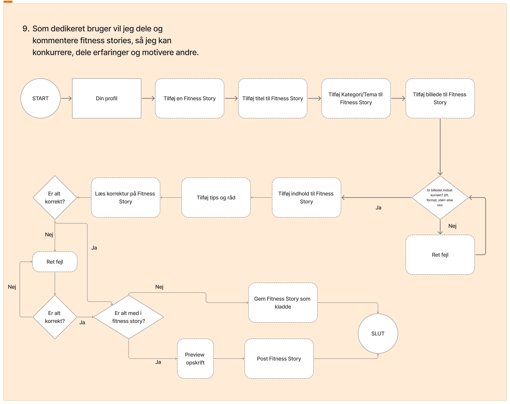
Jeg arbejdede med wireflows ud fra perspektivet af en bruger, der skulle oprette en story. Processen gjorde det tydeligt, hvilke trin og funktioner der skulle til for at gøre det nemt og intuitivt at dele en oplevelse, samtidig med at jeg kunne teste, hvordan layout og navigation understøtter brugernes lyst til at bidrage aktivt i FitTogether.
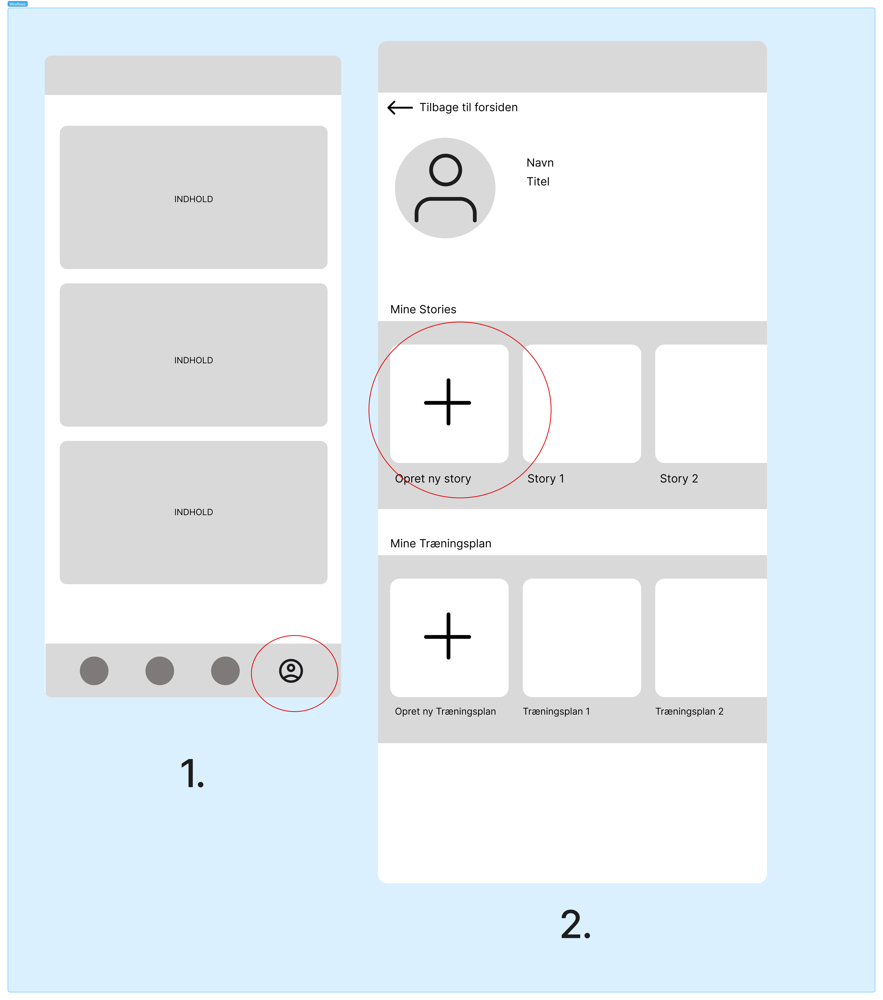
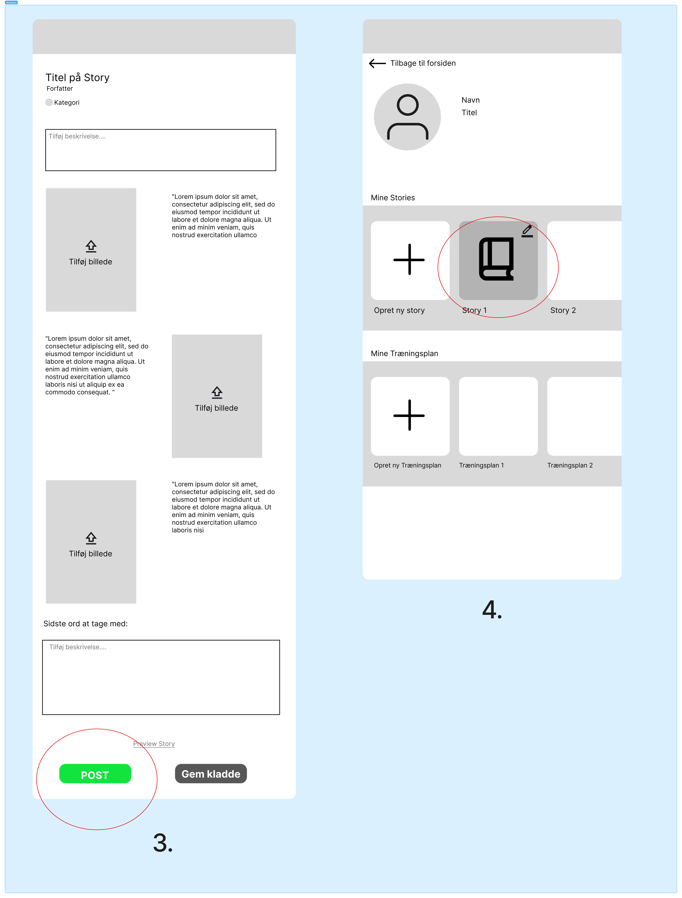
Jeg fastsatte fonte, tekststørrelser, farver og komponenter, der passer til FitTogether’s tema om fællesskab og motivation. Logoet blev skabt med hjælp fra AI. Guiden sikrer et genkendeligt og sammenhængende udtryk, så brugeren oplever appen som intuitiv og troværdig.
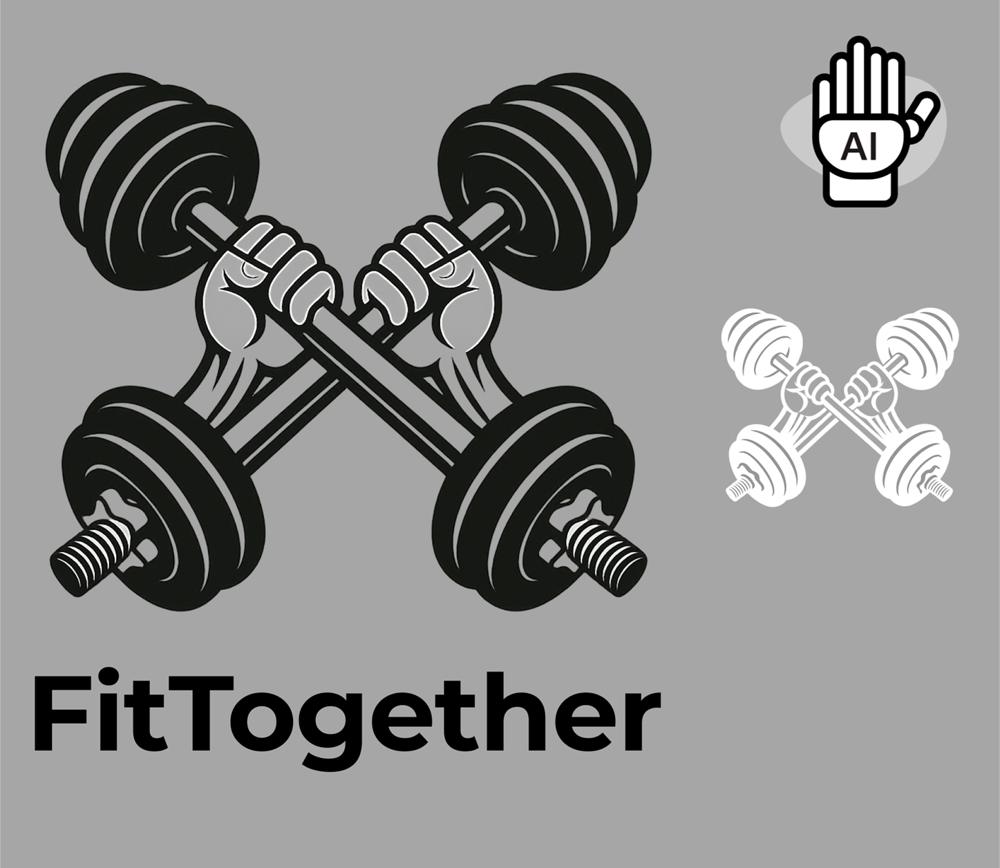
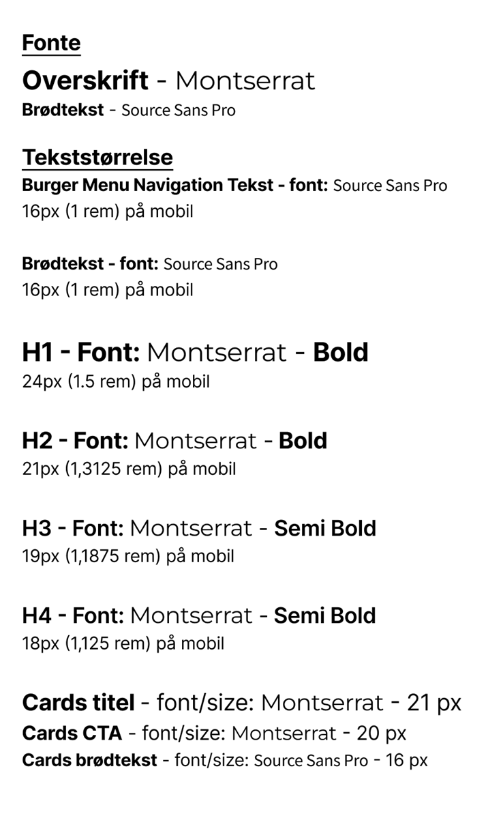
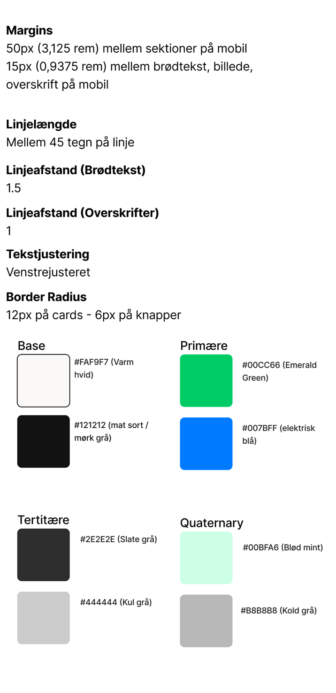
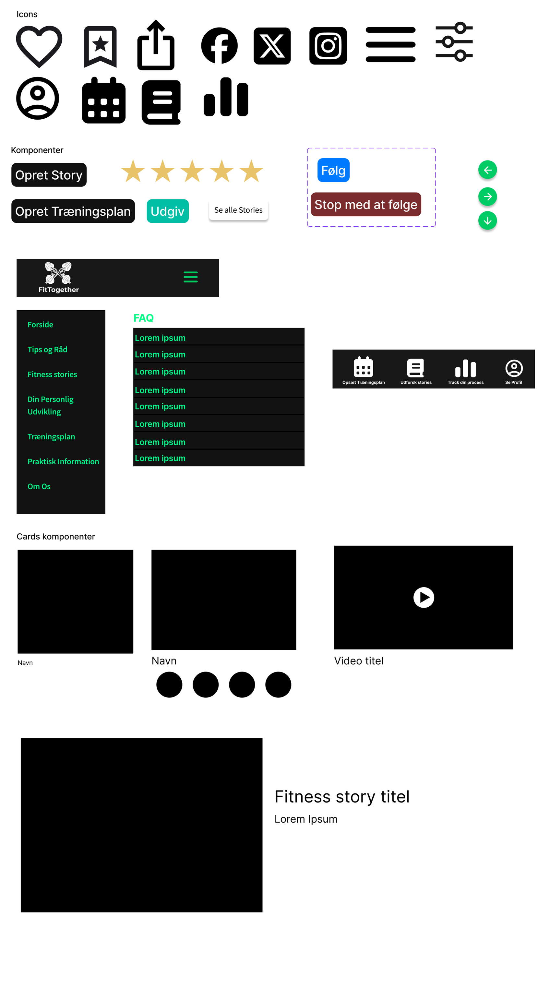
Jeg startede processen med digitale skitser, hvor jeg hurtigt kunne forme de første idéer til, hvordan FitTogether skulle fungere i praksis, også vha min design- og brandguide. Her afprøvede jeg flere layoutretninger og fokusområder, især omkring træningsformer og sociale features, såsom personlige træningshistorier.
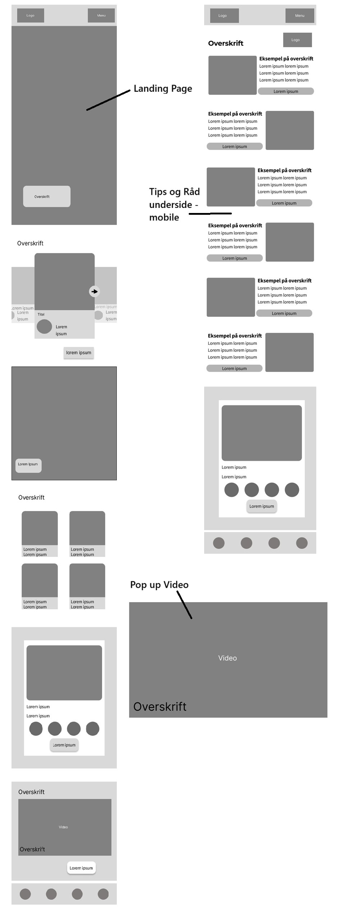
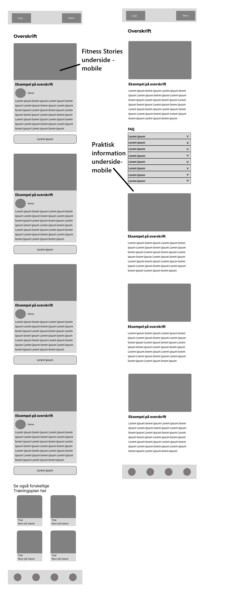
På baggrund af skitserne opbyggede jeg wireframes, hvor vi begyndte at arbejde mere konkret med navigation, informationshierarki og brugerflow. Her blev funktioner som Tips & Råd, personlige træningshistorier organiseret, så brugerne får en logisk og let tilgang til fællesskabet.
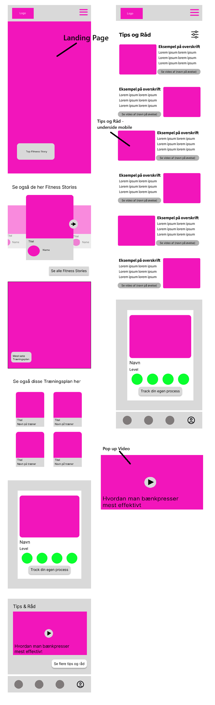
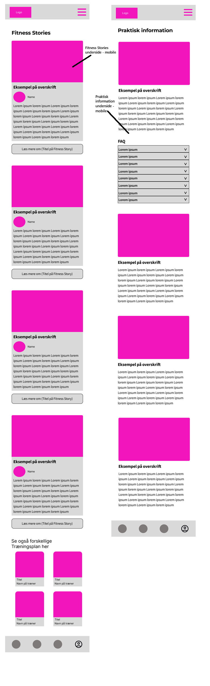
Da strukturen lå fast, udviklede jeg mock-ups, hvor FitTogether fik sit endelige visuelle udtryk. Jeg tilføjede farver, typografi, komponenter og billedstil fra min design- og brandguide, så designet afspejler appens fokus på fællesskab, motivation og energi.
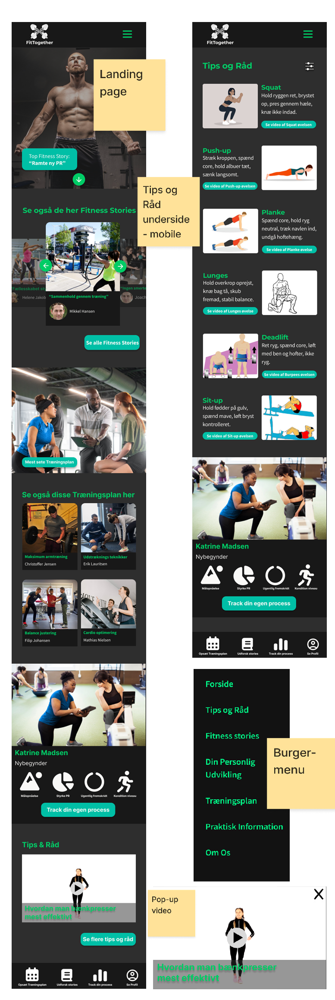
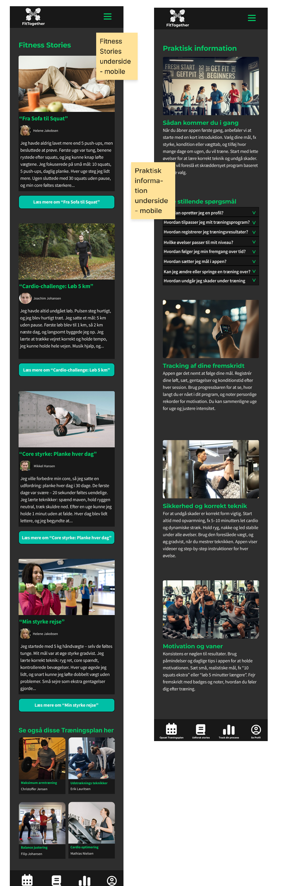